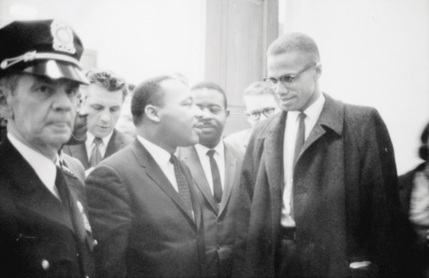
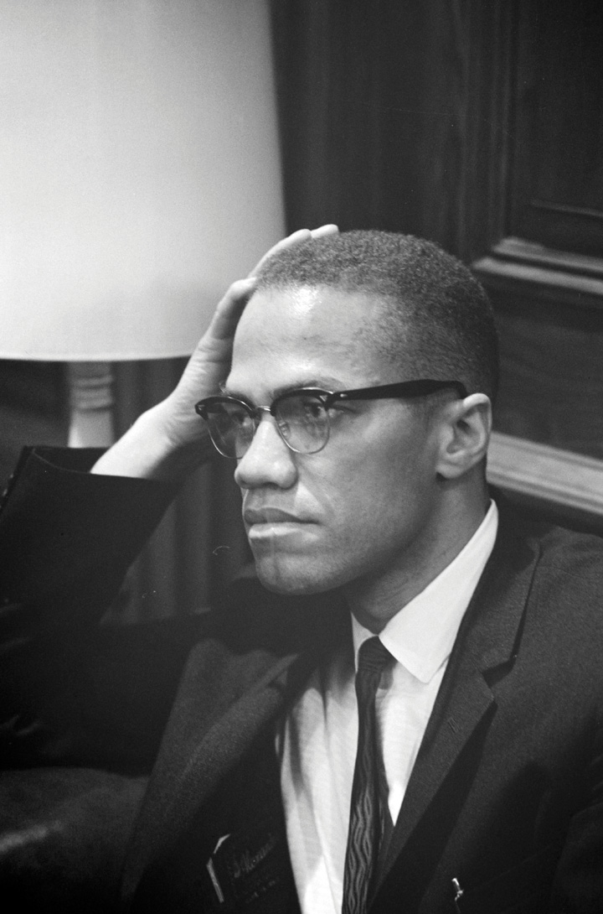
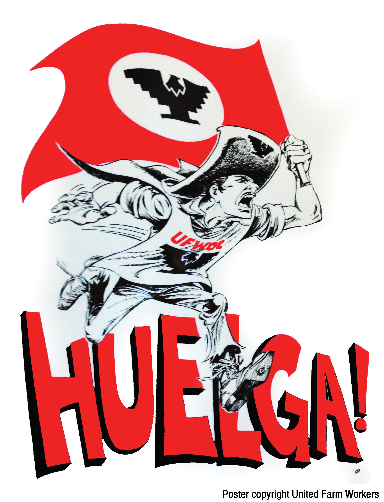

In the years following World War II, nearly 5 million African Americans and nearly as many whites migrated from the primarily rural South to Northern cities in search of greater economic opportunity. As was true of previous migration to the North, these families were influenced by both “push” and “pull” factors. The push factors—considerations that induced Southerners to leave the South—included racial segregation for black families and scarce funding for public schools for both whites and blacks. Perhaps more importantly, the invention of a mechanical cotton picker in 1944 had resulted in larger and larger numbers of both white and black sharecroppers being evicted each year from plantations they had lived and worked on for years. The pull factors—those things that attracted migrants to the North—included higher wages, better schools, and for African Americans the absence of legally enforced segregation. In fact, many Northern states had passed laws outlawing racial segregation in schools and public accommodations.
As had been the case with the Great Migration of the 1910s and 1920s, Southern blacks found most housing closed to them. Millions of Southern white sharecroppers likewise found few options they could afford. The government began constructing public housing projects, intending to both relieve overcrowding and provide affordable housing. Yet these projects faced a number of obstacles that limited their effectiveness. The private housing industry recognized that government-subsidized housing would reduce overall demand as many potential homeowners would choose federally subsidized apartments. As a result, people representing the housing industry secured regulations making public housing only eligible for the lowest-income families, meaning that housing projects were occupied exclusively by the urban poor. This stigma led middle-class and suburban neighborhoods to oppose the construction of housing projects in their neighborhoods as harbingers of crime and other urban problems. As a result, public housing was built only in existing poor neighborhoods and concentrated poverty in inner cities.
The increase in minority and poor migration to the city intensified existing patterns of migration out of the city by white and middle-class residents. This phenomenon was labeled “white flightA term used to describe the tendency of white residents to abandon a neighborhood as soon as minority families begin to purchase homes in that area.” and altered more than the racial composition of America’s cities. When the more affluent abandoned the city, the total tax revenue that was previously available to finance the operation of America’s largest cities rapidly declined. Suburban governments and school systems were suddenly flush with cash and able to attract new employers to the periphery of the city, further depressing the city core. Suburbanization also hid the problems of the urban and rural poor by insulating residents of affluent suburbs from the decaying schools, unemployment, crime, substance abuse, and other problems that were more prevalent in poverty-stricken areas.
Housing shortages, white flight, and ghettoization were especially felt within the cities of the Midwest and East Coast. The issue affected dozens of minorities, from African Americans and Mexican Americans to new arrivals from Asia and Latin America. For nonwhites of all shades, the North reflected author Gordon Parks’s poignant description of his hometown, “where freedom loosed one hand, while custom restrained the other.” Parks grew up on a farm near Fort Scott, Kansas, very near the spot where the a black regiment fought Confederates even though the Union had not yet accepted black men in the military. Consistent with the observations of Alexis de Tocqueville long before the Civil War, Parks’s 1963 autobiographical novel The Learning Tree revealed that racial prejudice was often strongest in the places that had rejected slavery.
In cities throughout the North and the West, ambitious speculators profited from the racial fears of whites and the limited housing options of minorities through a practice known as blockbustingThe practice of real-estate agents and speculators playing on white fears by announcing their intention to sell a home in an all-white neighborhood to a minority family. This is done to encourage “white flight” and thereby allow speculators to purchase homes from panicked whites at prices well below the home’s value. These homes are then sold for a huge markup to minority families with few housing options.. When a minority family successfully purchased a home in a previously all-white neighborhood, blockbusters exploited the anxiety of whites through rumors that many of their neighbors were also selling their homes and moving to the suburbs. Rumors became self-fulfilling prophesies as white residents quickly sold their homes to speculators for a fraction of their value.
Given the lack of decent housing available to African Americans and other minorities, these speculators could charge far more than the original value of the home because they represented the only option for middle-class minority families anxious to move out of the inner cities and segregated barrios. Tens of thousands of minority families purchased these homes each year, escalating white flight to the suburbs. Not all whites fled their neighborhoods, and some even welcomed their new neighbors, resulting in genuine interracial friendships that would have been unlikely to occur a generation earlier. But for thousands of minority families, moving to a primarily white neighborhood meant ostracism and even violence. Hundreds of homes in cities from Baltimore to Los Angeles and even Chicago and Minneapolis burned to the ground each year as a “gentle reminder” that nonwhite families had better know their place.
“Knowing one’s place” was a phrase used in the South to describe the acceptable range of low-status occupations and self-effacing attitudes that blacks were expected to maintain. As demonstrated by blockbusting and violence against property, the word “place” demonstrated the demand for geographical separation in the North. Black residents of Northern cities were made to understand that “place” would not be designated by signs barring their entrance to a theater or a restaurant. Instead, they were expected to somehow know where they were and were not welcome. Officially an integrated society, black residents in the North and West faced more pervasive residential segregation, and the resulting separate neighborhoods meant that the schools of these cities were often more segregated than those of the Deep South by 1970. Blacks also faced extreme discrimination on the job market outside of black-owned businesses. Even within primarily black neighborhoods such as Harlem in New York City and Watts in Los Angeles, black men and women could not find employment in many stores located in their all-black neighborhoods. They also faced daily harassment from the majority-white police.
In 1964, an off-duty police officer shot and killed a fifteen-year-old boy who was chasing a white man in Harlem. What should have been a minor affair (the man had sprayed the boy with a water hose) quickly escalated into a race riot when news of the boy’s death circulated throughout Harlem, an area that was already angry due to previous incidents and the city’s disinclination to hire black officers. The following year, Watts erupted in flames after similar tensions led a simple traffic stop to escalate into a major altercation. More than one hundred race riots erupted in 1967, with black residents venting similar frustrations against racist police, lack of job opportunity, residential segregation, and continued poverty.
Black leaders such as Malcolm X who lived in Northern cities and understood these frustrations became increasingly effective in mobilizing African Americans beyond the South. Born in Omaha, Malcolm Little’s earliest memories included his family home having crosses burnt in the yard for his father’s leadership in local civil rights organizations and his support of Marcus Garvey. As an adult, Malcolm replaced his given last name with “X” because he recognized that his ancestors were assigned the last name of their master and he wanted to remind himself and others of the family history that was taken from all African Americans in the process. After years of being discouraged by white teachers, Malcolm went from being the most promising student in his otherwise all-white class to the troublemaker that his teachers expected him to be. While in prison, Malcolm discovered the Nation of IslamA small religious sect under the leadership of Elijah Muhammad, who spread his version of the Muslim faith to African Americans. The sect grew rapidly due to the charisma of NOI leader Malcolm X until Elijah Muhammad expelled him for critical remarks about Muhammad’s leadership and his insistence on talking about political matters., a black nationalist religious sect that followed the teachings of Elijah Muhammad. Given the prominence of Islam throughout parts of Africa, Malcolm embraced Muhammad’s conservative teachings and believed that Islam was the natural religion of black Americans.
Figure 11.15
Martin Luther King Jr. and Malcolm X met only once, on March 26, 1964. The two men briefly exchanged pleasantries and never saw one another again. Although they are often portrayed as opposites, in many ways the more radical approach of Malcolm X assisted King.
When speaking to black audiences and responding to accusations that he and the Nation of Islam were teaching hate, Malcolm XA radical black leader of the Nation of Islam, in the last year of his life Malcolm ended his affiliation with the Nation of Islam and spoke more favorably of the possibility of interracial cooperation; however, he was assassinated by supporters of the Nation of Islam in Harlem in 1965. It is probable that the FBI knew at least some of the details about the planned assassination as they were tracking both Malcolm and the men who killed him. often responded by pointing out that white racism was inherently hateful. He described the way the media, society, and the educational system caused black children to grow up being ashamed of their history, culture, and even their physical appearance. “Who taught you to hate yourself?” Malcolm challenged his audiences. “Before you come asking Mr. Muhammad does he teach hate, you should ask yourself who taught you to hate being what God made you.”
In another speech, he discussed the way Africa was misrepresented and marginalized and the way this miseducation led to internalization of racism among people of African descent. “You can’t hate the roots of a tree,” Malcolm explained, “without hating the tree.” For Malcolm X, the roots were the history and culture of Africa that so many African Americans had grown to despise after years of miseducation. Like Carter Woodson and other black educators of previous generations, Malcolm recognized that the failure to teach African subjects in schools led generations of white and black Americans to assume that Africa was void of cultural and historical relevance. Given the media’s portrayal of Africa as backward and even savage, Malcolm X explained, it was only natural that black and white children assumed that Africans were inferior to Europeans in ways that reinforced white supremacy in America.
Following the passage of the 1965 Voting Rights Act, most white Americans reported their belief that problems of racial inequality had been sufficiently addressed. Black leaders countered by chronicling the persistence of de facto segregation in schools and neighborhoods. Even more troubling, they explained, was the continuation of economic inequality. As was usually the case, no one spoke more plainly on this subject than Malcolm X. “I’ve got a plate in front of me,” Malcolm began, “but nothing is on it. Because all of us are sitting at the same table, are all of us diners?”
Malcolm’s culinary reference was an intentional jab at those who believed the end of segregated lunch counters had somehow erased centuries of economic inequality. “I’m not a diner until you let me dine. Just being at the table with others who are dining doesn’t make me a diner, and this is what you’ve got to get in your head here in this country. Just because you’re in this country doesn’t make you an American.” Malcolm then discomforted many by likening black America to a colony of the imperialist white America. His economic reference to a people who performed labor for a mere pittance of those in power hit home for many listeners. “You’ve got to enjoy the fruits of Americanism,” he continued. “You haven’t enjoyed those fruits. You’ve enjoyed the thorns. You’ve enjoyed the thistles. But you have not enjoyed the fruits, no sir. You have fought harder for the fruits than the white man has, you have worked harder for the fruits than the white man has, but you’ve enjoyed less.”
Figure 11.16
Malcolm’s rhetoric reflected a growing sense of disillusionment with the civil rights movement among many African Americans, especially those for whom integrated restaurants and colleges meant little if economic issues were not also addressed.
Most white Americans, including many who considered themselves liberal on issues of civil rights, failed to recognize why Malcolm did not share their belief that the goals of the civil rights movement had been achieved with the passage of the 1964 Civil Rights Act. As a result, the movement started to fracture along racial lines by 1965. In early June 1966, James Meredith began his solitary March Against Fear from Memphis to Jackson, Mississippi, to publicize the persistence of segregation and disenfranchisement despite federal law. Thirty miles into his 220-mile journey, a white supremacist unleashed three volleys from a shotgun that would have killed Meredith had it not been for reporters and FBI agents who were following his march.
Meredith had become a household name four years prior when he integrated the University of Mississippi. As a result, members of the black community along with SCLC, SNCC, the NAACP, and CORE decided to continue Meredith’s march. Despite the growing disagreements between some of the leaders of these organizations, they decided to unite in an effort to publicize the attempted murder of James Meredith and remind the United States that most black residents in the Deep South were still denied the ballot and other basic rights. After three emotional weeks, the march concluded successfully and was capped off when a recovering James Meredith joined a crowd that had grown to 12,000 as it arrived in Jackson on June 26.
Divisions had already existed between these four leading civil rights organizations, with the NAACP and the clergy-dominated SCLC being more conservative than the youthful CORE and SNCC. The leaders of the organizations worked hard to compromise with one another during a series of marches and protests throughout Mississippi that summer, but the divisions were becoming more pronounced. During a march of 10,000 to 15,000 participants to Jackson, Mississippi, the group transitioned from singing “We Shall Overcome” to chanting “We Want Black Power” as the demonstrators tired of being tormented and arrested.
While still embracing nonviolence, the change demonstrated the frustrations of black Southerners who were tiring of begging whites for acceptance. Black Power was a slogan seized upon by new SNCC leader Stokely CarmichaelA student leader within SNCC who was arrested dozens of times, Carmichael grew increasingly critical of the strategy of sit-ins by the time he was elected to lead SNCC. In time, Carmichael supported those who wanted to restrict membership in SNCC to African Americans for a variety of reasons. and reflected a desire to support black candidates rather than beg whites to let them vote for other whites. Black Power reflected a desire to form black-owned companies rather than facing discrimination by the few white bosses that would even consider hiring them at any level. Black Power meant standing up for black institutions rather than praying for the day when whites would permit them to join their own as second-class citizens. Even in Mississippi, the ideas and fiery rhetoric of SNCC’s Stokely Carmichael were beginning to eclipse those of King and the SCLC.
Following the march to Jackson, a visibly shaken King explained his belief that without tangible victories, the movement he helped to create might eventually turn away from nonviolence. “The government has got to give me some victories if I’m going to keep people nonviolent,” he explained. “I know I’m going to stay nonviolent no matter what happens. But a lot of people are getting hurt and bitter, and they can’t see it that way anymore.” King also sought to remind listeners that many whites were committed to black freedom while also working to reassure whites that the movement did not threaten them or their interests. King’s attempts to bring all sides together made him vulnerable to more militant leaders like Malcolm X and Stokely Carmichael. However, by King’s perspective, the internal divisions among various leaders and participants in the march only helped Mississippi “get off the hook” for its continued repression of blacks, regardless of which organizational button they wore.
The year 1966 was also when Bobby Seale and Huey P. Newton formed the Black Panther Party for Self Defense. Named after a black-led political party that had defended the rights of black voters in Lowndes County, Alabama, the Black Panthers believed that the black freedom movement needed to be more militant if it was to convince whites to end their racist patterns of behavior. Black men in Oakland rallied to the Panthers due to the irresponsiveness of city leaders to demands for basic services, such as a traffic light at a busy intersection where several black youths had been killed by speeding vehicles. They also demanded an end to police brutality and took the extreme measure of arming themselves and patrolling their own neighborhoods. Citing the Second Amendment and becoming intimately familiar with local gun ordinances, the Panthers marched through black neighborhoods across the nation by 1967, wearing their signature black sunglasses, black leather jackets, and black berets.
Opponents argued that the organization’s chief appeal was its aggressive posturing and fiery rhetoric. Organizer Huey P. Newton was arrested in October 1967 for killing a police officer. Citing the police harassment that led to the deadly confrontation, Panther supporters launched a campaign to “Free Huey” that enraged those who already viewed the Panthers as dangerous. Some young men were surely attracted to the Panthers for the wrong reasons, however, Stanford University’s Black Panther Party Research Project has identified over sixty community service programs that were organized by local Panther chapters in California alone. One of the most successful Panther projects was the operation of free breakfast programs in nearly every major city. For tens of thousands of inner-city youths, school lunches were the only nutritious meal they could count on receiving. Long before school breakfast programs were established, the Panthers rose early each morning to fix a nutritious breakfast for children in neighborhoods throughout America. As the children ate, the young men sat and talked with them about the importance of black pride and education. For those who opposed the Panthers, the breakfast and afterschool programs seemed little more than indoctrination.
Figure 11.17

Many states had no laws against openly carrying and displaying firearms until the Black Panther Party began using weapons in their demonstrations. In this photo, members of a Seattle Black Panther chapter stand on the steps of the statehouse in Olympia, Washington. They are protesting a bill that would make it illegal to openly display firearms.
Categorized by the FBI as a “radical” or “subversive” group, the Panthers lost the opportunity to receive federal and state funding that was commonly distributed to other nonprofit organizations that also operated free health clinics and community centers for youths. At the same time, the Panthers’ open brandishing of weapons combined with the often-violent rhetoric of some of the more infamous Panther leaders could inflame tensions. The media seized upon each incident where an individual Panther violated the founding principle of being nonviolent with those who were nonviolent as a handful of Panther leaders were found guilty of crimes. However, considering the aggressive efforts of local police and the FBI to monitor the daily activities of each Black Panther, the fact that so few Panthers were arrested and even fewer convicted of any crime challenges one to reconsider the FBI’s assumption that this was a subversive group. At the same time, one must also question whether the Panther’s often deliberate antagonizing of city officials was also partly to blame for the group’s troubles.
Believing the organization to be subversive, the FBI spent hundreds of thousands of dollars to thwart the Panthers’ activities. One of the most costly surveillance efforts included the use of paid informants as the FBI hired black men to infiltrate and disrupt the activities of their local Panther chapters. Among the reasons cited as evidence of the Black Panthers’ insurrectionary activity was their support of Communist doctrine. Panthers had sold books by Chairman Mao to students attending Berkeley University, but this was largely to raise funds to purchase weapons rather than a reflection of political orientation.
White suburban college students likewise seldom supported the ideas and actions of the belligerent Chinese dictator, but like the Panthers, they sought to cast themselves in the revolutionary image of the era. Both groups also sought authentic experience beyond their insular worlds but never fully grasped what the other might offer their struggle. Berkeley students could hardly claim the mantle of revolutionary when all their friends were white and middle class. Students started carrying Mao’s little red book in their pocket to demonstrate their authenticity and hip worldliness, a symbol they had transcended race and class by supporting their “black friends” from the ghetto. Rich in authenticity but lacking access to money and power, black inner-city youths likewise viewed the other as a means to achieve their short-term goal. Had the two groups been able to exchange more than books and currency on the day the Black Panthers went to Berkeley, the goal of both groups to “speak truth to power” might have been realized.
In 1962, a small group of college-aged activists met in Port Huron, Michigan, and created an organization called the Students for a Democratic Society (SDS)A controversial student organization that grew in response to its members protests against the Vietnam War. SDS grew to hundreds of chapters but soon divided among themselves regarding issues related to race and civil rights activism.. They issued the Port Huron Statement, which called for greater participation in the process of government. The statement acknowledged the “modest comfort” most of their members enjoyed, which contrasted with the world they were inheriting where poverty was rampant even in wealthy nations like the United States while famine and civil war raged across the globe.
Like the “Old Left” of assorted Marxists, the New Left supported the emerging civil rights movement. However, the New Left believed in free markets and recognized the authoritarian drift of the leading Communist regimes. Instead, the New Left called for “participatory democracy” through increased activism. New Left student activists believed this would lead not only to shared campus governance but also to a federal government that was more responsive to the needs of the common people. Of course, few of the leftists of early twentieth-century America were Communists. In this uniquely American and moderate leftist tradition, the New Left of the 1960s continued the call for increased social spending while adding their own modern challenge to the logic of the Cold War and escalating military budgets. Believing that universities and students had a unique role in spreading this message and promoting participatory democracy, the Port Huron Statement challenged college students to become leaders of grassroots movements for a wide range of causes.
Although a number of SDS chapters were formed throughout the United States, these groups went largely unnoticed until 1964 when students at the University of California in Berkeley launched the Free Speech Movement. Students at Berkeley believed that the administration of their school had betrayed the liberal traditions of the university with its increasing ties to defense contractors. They were even more upset at the way their protests against the Vietnam War had seemingly fallen upon deaf ears. The Vietnam War galvanized many otherwise disparate groups in what would become the New Left, a coalition of organizations and activists who hoped to radicalize the populace beyond the liberal consensus of the late 1950s and 1960s. Whereas liberals accepted the basic premise of the Cold War and agreed with conservatives that Communism must be contained by armed force, if necessary, the New Left called for immediate withdrawal from Vietnam. Liberals supported moderate civil rights reform, such as ending segregation and enforcing voting rights for all. The New Left did not believe that laws alone were sufficient to remedy past injustices.
Because New Left groups like SDS were often strongest at elite universities, its adherents were often denigrated by critics as spoiled children of affluence who were ungrateful for the sacrifices of those who had survived the Great Depression and fought in World War II. Despite this image, SDS expanded to smaller universities and community colleges. Members of SDS were often members of SNCC and other civil rights organizations that became more radical in the late 1960s. As a result, SDS chapters moved toward direct confrontations with authority in ways that increasingly led to direct conflict with one another.
SDS members often divided on complex issues and also disagreed about how to best confront the persistence of racism and poverty. Rather than explore these divisions, the group rallied around one message that unified its supporters: end the Vietnam War. SDS held national protests against the war that attracted 20,000 participants in the spring of 1965. By the end of 1967, the SDS had 300 chapters. The SDS-sponsored protests in the nation’s capital were attracting nearly 100,000 participants. SDS chapters also held “teach-ins” on hundreds of campuses where students and faculty discussed the history and culture of Vietnam. The intent was usually to find ways to counter the image that Southeastern Asia was little more than a domino or a pawn on a Cold War chessboard.
Many of these teach-ins and other protests were held at universities that refused to recognize the legitimacy of SDS on their campus and threatened to expel its participants. Because LBJ had granted draft deferment to any college student in good academic standing, expulsion meant that an SDS member might be drafted. By October 1967, however, students and other activists expanded their protests. Some even began to shun nonviolence while others engaged in direct confrontations with draft boards. Some SDS members even attempted to take over a military draft induction center in Oakland. The resulting violent confrontation with police galvanized many against the protesters. However, by the end of 1967, support for the war had dropped to 58 percent of the US public.
In the near term, most feminists celebrated the 1964 Civil Rights Act that banned both racial and gender discrimination in employment and created the EEOC to enforce the law’s provisions. Others worried that the scattered provisions that protected women from being fired for pregnancy might become endangered. Still others were concerned that the law would not be enforced at all. As discussed previously, the original version of the act did not include gender until it was amended by Southern congressmen as an attempt to divide the law’s supporters. Although several leading members of Congress spoke in favor of this amendment and the act passed with its provisions against gender discrimination, most members of the EEOC believed that enforcing this part of the act would detract from their ability to investigate “more serious cases” dealing with racial discrimination. For the first few years of the EEOC’s existence, the organization only half-heartedly pursued complaints regarding gender discrimination, even though they composed over one-third of the cases submitted.
Many feminists agreed that history of gender discrimination paled in comparison to centuries of racial oppression. “For every discrimination that has been made against a woman in this country,” explained Oregon congresswoman Edith Green, “there has been ten times as much discrimination against the Negro.” Yet Green and others made it clear that racial discrimination did not lessen the severity of gender discrimination or excuse the federal government for discounting its consequences. Black women added that the EEOC must enforce provisions against gender discrimination to protect their rights because it was impossible to distinguish where one form of discrimination ended and the other began. No law could assure the rights of black women, they explained, unless the practice of categorizing labor in terms of either race or gender were defined as an act of discrimination instead of tolerated on the grounds of tradition. In response to the reluctance of the federal government to enforce the 1964 Civil Rights Act as it related to gender, hundreds of women convened a meeting in 1966 that led to the founding of the National Organization for Women (NOW)Formed to enforce the gender equality provisions of the 1964 Civil Rights Act, NOW quickly became one of the leading feminist organizations and sought to eradicate gender discrimination and advance a variety of women’s causes..
Many women had taken active roles in the civil rights movement and the antiwar protests. Both movements inspired large numbers of women to speak out about their causes, but the movements were generally run by men. These leaders did not think that women could be effective leaders and often just brushed them aside when they wanted to have a voice in the movement’s direction. This type of treatment was common. Many women began to band together to discuss their feelings about the way they were being treated. The more these groups networked, the more they found out that other women across the nation shared their experiences and perspectives. Author and activist Shulamith FirestoneA leading figure in a number of leading feminist organizations, such as the New York Radical Women who launched the famous protest against the 1968 Miss America Pageant. Firestone is the author of the influential book The Dialectic of Sex, which served as a theoretical base for many early feminists as well as fodder for those who opposed her ideas. Firestone clearly articulated a connection between male-dominated family structures and gender inequality. Less well-received were some of her theoretical solutions, which included the abolition of natural pregnancy and communal alternatives to the traditional family structure. was told by a male antiwar activist, “Move on little girl; we have more important issues to talk about here than women’s liberation.” Firestone would later publish The Dialectic of Sex: The Case for Feminist Revolution, which argued that the paternalism of the traditional American family structure was the foundation of gender oppression.
“There is no overt anti-feminism in our society,” wrote feminist scholar Alice Rossi in 1964, “not because sex equality has been achieved, but because there is practically no feminist spark left among American women.” Rossi wrote that few if any of even the brightest women she taught in her college classes had plans or even the ambition to pursue a career, instead pinning their hopes on a male suitor who may or may not share their own talent and ambition. The events of the next few years would prove that Rossi’s estimation of the women’s movement was too pessimistic. At the same time, the revival of the women’s movement may have been inspired by Rossi’s challenging rhetoric.
Figure 11.18

Two of the most famous protests against stereotypical views of women and rigid standards of physical beauty occurred during the 1968 and 1969 Miss America pageants in Atlantic City, New Jersey. Feminists invited women to dump cosmetics, high-heeled shoes, and other objects sold by the beauty industry into a “Freedom Trash Can.” Some protesters held signs likening the contest to a livestock competition while others affirmed the beauty of all women.
The movement was certainly fueled by Rossi’s efforts beyond the classroom. She and author Betty Friedan helped to found the National Organization of Women (NOW), with Friedan serving as the group’s first president. Like every major women’s organization in the past, NOW pursued multiple issues that sought to improve the quality of women’s lives in tangible ways while also seeking to promote a more radical agenda.
Some NOW members were initially attracted to the organization by programs such as child care centers and educational programs. Not yet ready to buy into the notion of broad social change, many women joined NOW to share the burdens and obligations of childrearing while networking with other women. Before long, these women were attending meetings and talking about the other obstacles in their lives, such as gender discrimination. Similar to the way that participants in Freedom Schools originally sought tangible goals such as learning to read, members of NOW often joined the women’s movement for the tangible benefits offered by child care centers and other programs. In both cases, participants soon began to realize their own empowerment through collective action.
As NOW grew, it also created an infrastructure that was enlisted against the practice of explicit gender segregation and pay differentials. NOW also mobilized to challenge more subtle forms of discrimination from employers and the federal government. NOW lobbied the Equal Employment Opportunity Commission, reminding it of its duty to enforce the terms of the 1964 Civil Rights Act. It also lobbied federal and state governments for support for child-care centers. NOW members also petitioned in favor of laws that would punish employers for practicing discrimination against pregnant employees. While organizing against the termination of pregnant women united NOW members, the issue of terminating pregnancies was divisive in the 1960s. By the 1970s however, the legalization of abortion would be one of the leading issues of many NOW supporters.
Although it was less noticed than many of the mid-1960s civil rights bills, the Hart-Cellar Act of 1965A sweeping reform to the US immigration law that removed restrictions against Asian immigrants and replaced the country-specific quota system with a blanket limit of 20,000 immigrants from one nation. The law favored immigrants with important skills and family members of existing citizens. would have a tremendous impact on US conceptions of diversity. Immigrants composed only 5 percent of the population at this time. Immigration quotas prior to 1965 heavily favored immigrants from Western European nations. The new law ended these quotas, as well as provisions against Asian immigration.
At the same time, some supporters of the law sought to limit the number of Hispanic immigrants to the United States. The 1965 act placed an annual limit of 20,000 immigrants from any particular nation and capped the permissible immigration of people from the Western Hemisphere at 120,000 per year. The act also placed an annual limit of 170,000 immigrants from the Eastern Hemisphere.
Whereas previous immigration laws banned Communists from coming to the United States, the new law sought to demonstrate the superiority of America’s Capitalist system by encouraging an unlimited number of residents of Communist nations to seek “refuge” in America. This law would not result in the predicted immigration of Eastern Europeans, but would frequently be invoked for residents of Southeastern Asia in the following decade. The law also encouraged immigrants with certain valuable skills, such as doctors, nurses, and engineers, to come to the United States. It also provided measures to ease the immigration of family members, even if this meant exceeding the annual quota.
Figure 11.19
Cesar Chavez and Dolores Huerta led the United Farm Workers (UFW) in protesting the wages and conditions faced by migrant farm workers. The most effective protests were those that combined strikes (huelga in Spanish) with consumer boycotts of lettuce, grapes, and other crops that were grown by employers who refused to work with the UFW.
The law received its first test when Castro ended his prohibition against Cubans leaving the island. Soon, hundreds of thousands of Cubans with American relatives were able to come to the United States. Many experienced prejudice but found strength in family networks and the vast number of fellow Cubans who chose to live in the Miami, Florida, area. The total Hispanic population of the United States tripled during the 1960s from an estimated 3 to 9 million residents. This growing population found inspiration in the community and church orientation of the Black Freedom struggle and common ground with those who experienced discrimination because of their race or ethnicity. In 1967, Latino activists formed the Mexican American Legal Defense and Educational Fund in San Antonio. This organization partnered with the NAACP to support civil rights litigation dealing with equal employment and housing, racial profiling and police brutality, and equal opportunity in education.
One of the most pressing issues in the Southwest was the continued segregation of Mexican American students. In Corpus Christi, Texas, white children were bused out of school districts with large Mexican American populations. The result was that most white and Mexican American children in the city attended schools that were segregated in every way but name. In addition, the “white” schools refused to hire any black or Mexican American faculty. Jose Cisneros and two dozen other Mexican American families sued the school district of Corpus Christi, Texas, in 1968. The court agreed that school officials deliberately sought to maintain separate schools for children of Mexican origin and ordered the school board to reverse strategies that had been used to delay integration.
Latino activist Cesar ChavezA US citizen of Mexican origin, Chavez was a strong believer that union activism would benefit other primarily Latino/Latina migrant workers in California and other Western states who were regularly exploited. By the mid-1970s, Chavez and other activists had unionized 50,000 workers. demonstrated the connection between ethnicity and class by exposing the conditions Americans of Mexican origin faced in their new home. The son of a migrant farm family, Chavez was well acquainted with the tribulations of agricultural workers throughout the West. Chavez and Dolores Huerta formed the United Farm Workers (UFW) to unionize migrant workers and demand fair employment contracts. When California growers refused to work with the union, Chavez sought to use the same techniques utilized by the Montgomery Improvement Association to force the growers to work with the union. Recognizing that migrant workers were vulnerable to exploitation precisely because of their lack of economic resources, Chavez organized migrant workers across the nation to influence consumer behavior. It was only when the workers convinced enough US consumers to only purchase wine and grapes from growers who recognized the union that the UFW began to make an impact. By 1970, the combination of labor strikes and consumer boycotts forced two dozen grape growers to recognize the union and sign contracts approved by labor representatives.
Native Americans continued their protests against the federal government’s policy of termination, culminating in the 1961 Declaration of Indian Purpose by the National Council of American Indians. This document expressed the desire of tribes to maintain self-determination and the demands for greater economic opportunities. The American Indian Movement (AIM)An organization for Native American activists belonging to all tribes, AIM made headlines in the late 1960s and early 1970s due to several direct confrontations with authorities. AIM continues to fight for Native American rights while furthering pan-Indian unity and confronting racial stereotypes. was formed in 1963 to pursue the twin goals of self-determination and greater opportunities, with members wearing red berets and chanting “Red Power” by the mid-1960s in protest of the limited programs led by non-Natives within President Johnson’s Great Society. Johnson officially ended the termination of Indian tribes in 1968, and most of the terminated tribes began campaigns to regain their lost status. In California, a group of AIM activists captured the abandoned prison island of Alcatraz in 1969. The occupiers hoped to create a museum and cultural center and unsuccessfully offered to purchase the island for $24 worth of beads and cloth.